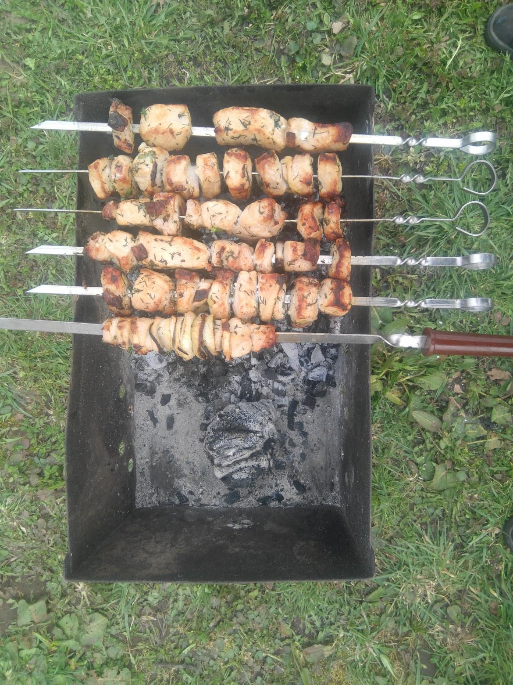

Sastāvdaļas:
- 1kg cūkgaļas kakla karbonāde
- 1/2 paciņu majonēzes
- neliela buntīte diļļu
- 4 ķiploka daiviņas
- vidēja lieluma citronu
- 3 lieli sīpoli
- sāls, malti pipari, un var arī šašlika garšvielu
Pagatavošana:
- Sagriež cūkgaļu nelielos gabalos un saliek gaļu bļodā.
- Sagriež sīpolus un citronu šķēlītes un pieliek gaļai.
- Caur spiedi izspiež ķiploka daiviņas un sakapā dilles.
- Pieliek garšvielas pēc garšas.
- Gatavo šašliku liek ledusskapī uz nakti ievilkties.
Gaļu var spraust uz iesmiem pamīšus ar sīpoliem
Labu apetīti!